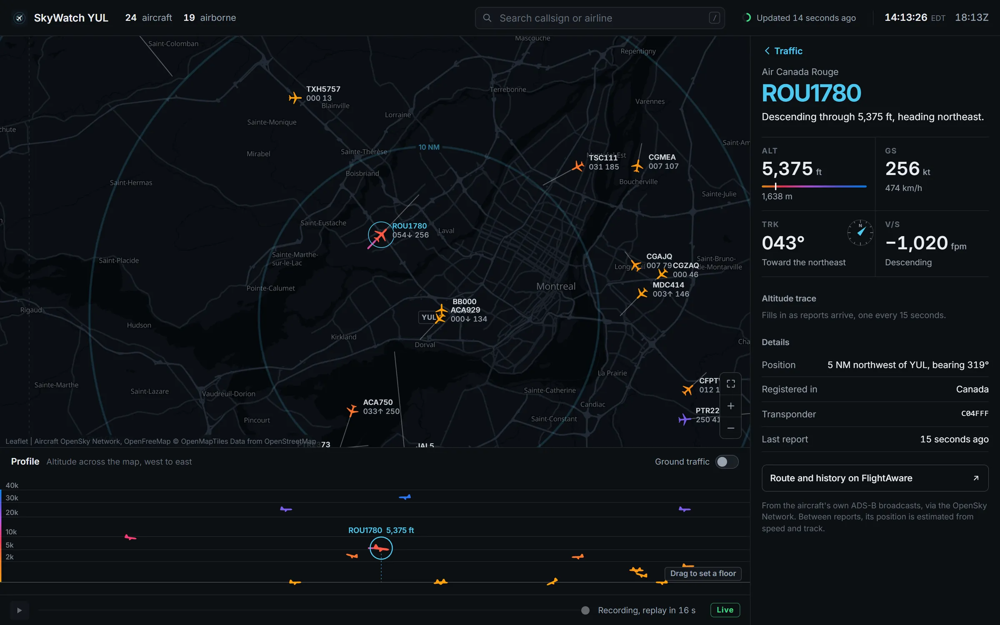
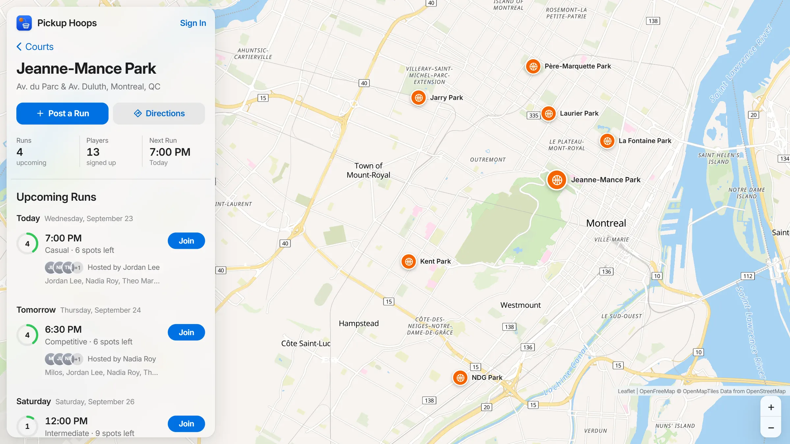

Live flight tracker
SkyWatch YUL
Every plane over Montréal on one live map, with where it's headed, how high it is and how fast it's going.
React · Leaflet · MapLibre · FastAPI · OpenSky API

Computer science at Concordia University, Montréal
I focus on backend development and systems programming, and I build full‑stack apps on the side. I'm looking for a software engineering internship for summer 2027.
Two apps I built around Montréal. Open one to see it up close.
Live flight tracker
Every plane over Montréal on one live map, with where it's headed, how high it is and how fast it's going.
React · Leaflet · MapLibre · FastAPI · OpenSky API

Full-stack web app
Find a pickup basketball game at a real court in Montréal, then join it in one tap.
React · Leaflet · MapLibre · FastAPI · SQLAlchemy · PostgreSQL

This site is hand-written too, with no framework. Source
I study computer science at Concordia University in Montréal. I learn best by building, so I spend my own time on projects that push me past what class covers. Two of my interests, basketball and aviation, turned into the apps above. The third one is cars.
2023–2027
Concordia University
Bachelor of Computer Science, graduating in fall 2027
Data structures and algorithms, discrete math, object-oriented design, systems and functional programming
2020–2023
John Abbott College
DEC, Social Sciences with Mathematics. Dean's List.
Toolkit
Scripting, automation, and backend services with FastAPI and SQLAlchemy.
Data structures, algorithms, and OOP. Priority queues, AVL trees, heaps, and graph traversals implemented from scratch.
React apps, responsive pages, CSS animation, and browser interactions, plus the HTML and CSS around them.
Systems programming, manual memory allocation, and pointers.
Immutable data, recursion, higher-order functions, and data transformation.
Also React, FastAPI, SQLAlchemy, REST APIs, Git, Docker
I'm looking for a software engineering internship for summer 2027. Email is the fastest way to reach me.
Milos Jarcov
Computer Science, Concordia University